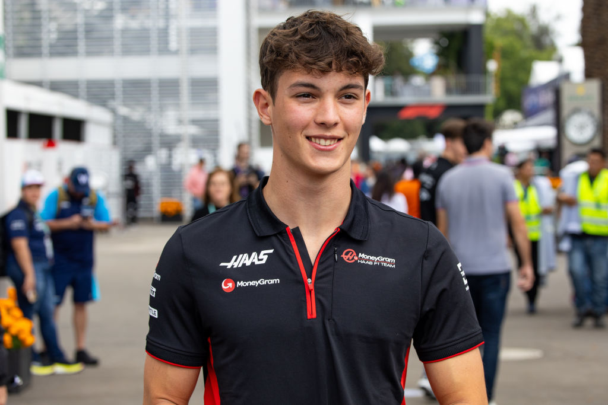
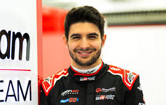

Haas

MoneyGram Haas
Team Principle: Ayao Komatsu
Drivers: Oliver Bearman, Esteban Ocon
Car: VF-25
Reserve Drivers: Ryo Hirakawa
Academy Drivers: Courtney Crone
Oliver Bearman
Ollie Bearman is a rookie this year and has pulled of some amazing drives. In Bahrain he qualifies P20 and ended up P10 and in the points which isn't bad for a rookie driving a Haas.
Race Engineer: Ronan O'Hare
Esteban Ocon
Esteban Ocon is a french driver who didn't come from a rich background like most Formula 1 drivers. He originally raced for Force India but he moved to Alpine where he was teamates with Pierre Gasly who he didn't get along with. This year he is at Haas and is 9th in the standings.
Race Engineer: Laura Mueller